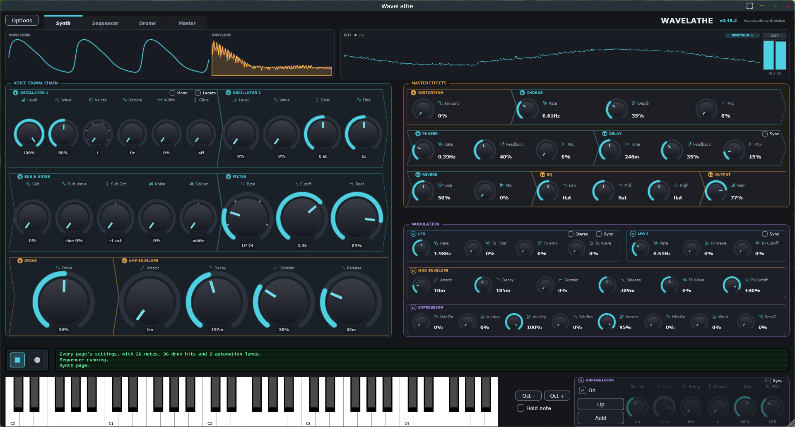
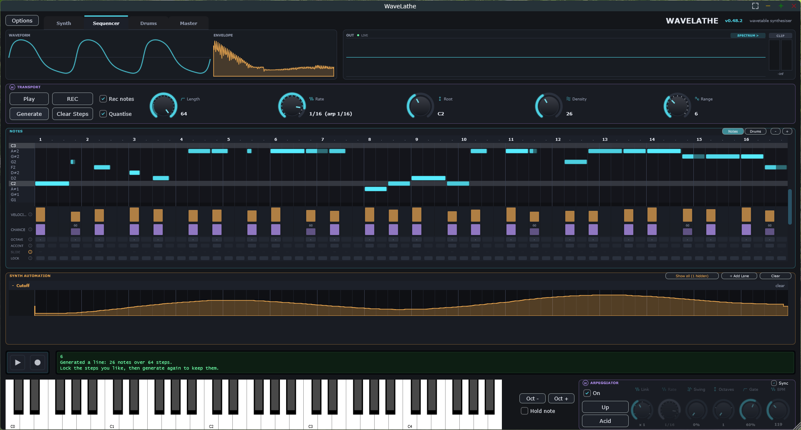
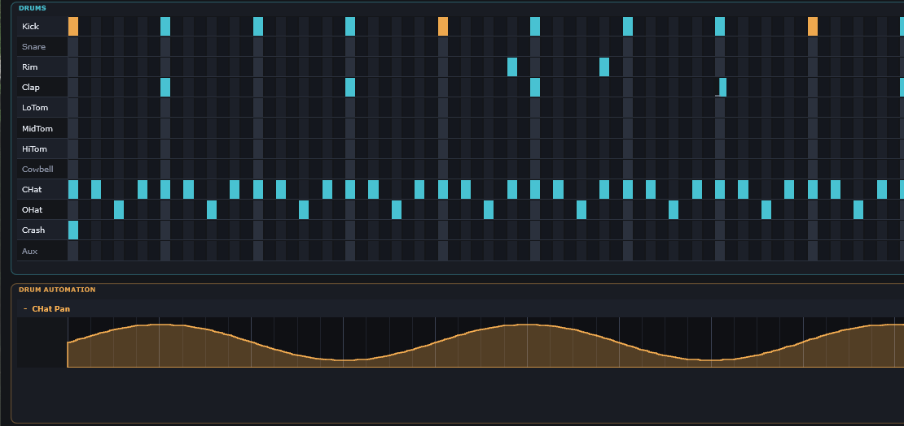
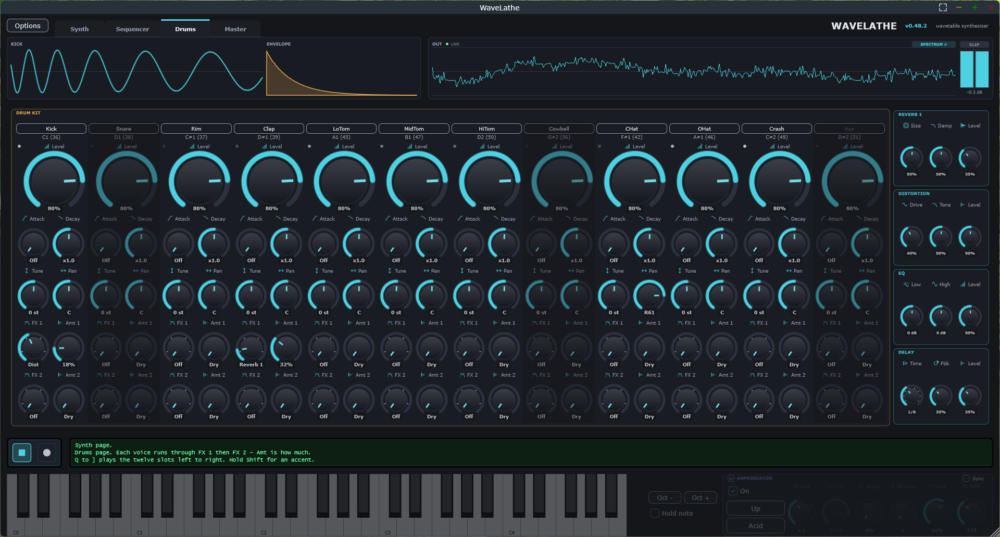
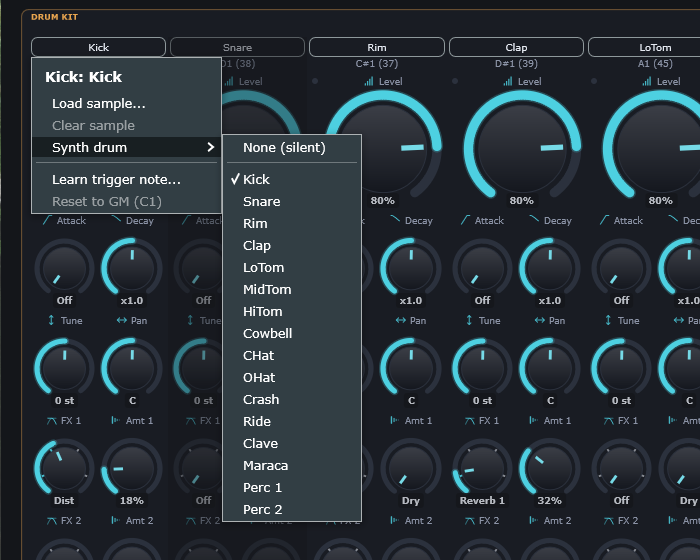
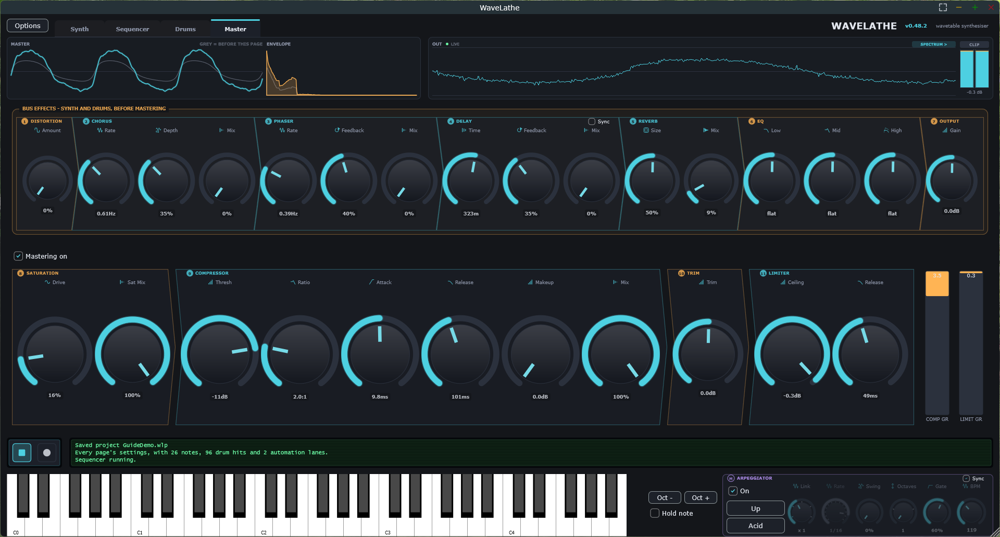
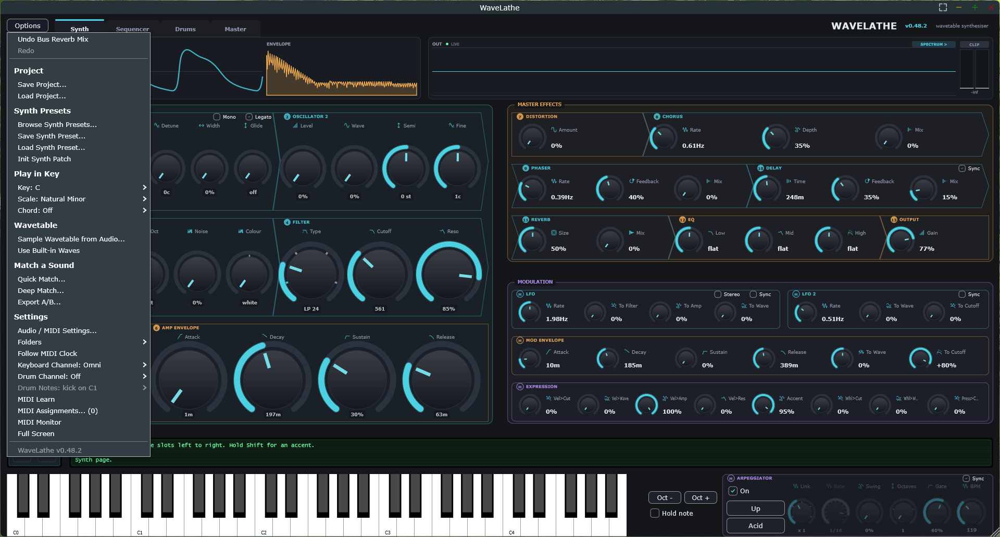

WaveLathe
A wavetable synthesiser for Windows — two oscillators with a sub and noise, a multi-mode filter, an arpeggiator, a piano-roll step sequencer, a twelve-slot drum machine, bus effects and a mastering chain over the whole mix, and a sound matcher that fits a patch to a recording.
Contents
1 · Installing
WaveLathe needs Windows 10 or 11, 64-bit. There is no macOS or Linux build. Nothing else has to be installed first — the C++ runtime is built into every file, so they run on a machine that has never had a development tool or a Microsoft redistributable on it.
Download it from github.com/mrdatacommando/WaveLathe. The Download link near the top of that page gets the newest release as one zip, with no account needed, and unzipping it is the whole installation. The source code is in the same place, if you would rather build WaveLathe yourself; the page below the link says how.
The package holds two products, each as a standalone and a plugin:
| File | What it is |
|---|---|
| WaveLathe.exe | The synthesiser and drum machine, as an application of its own. |
| VST3\WaveLathe.vst3 | The same instrument, as a plugin for your DAW. |
| WaveLathe Master.exe | The mastering chain from the Master page, as an application of its own. See section 11. |
| VST3\WaveLathe Master.vst3 | The same mastering chain, as an effect plugin for a mix bus. |
Beside them are this guide, a READ ME FIRST, the changelog, the
licence, and the licences of the components WaveLathe is built with.
The standalone
WaveLathe.exe needs no installation. Put it wherever you like
and run it. The first thing to do is open
Options → Audio / MIDI Settings and choose your output
device; until you do, you may get no sound at all.
The plugins
Copy the .vst3 bundles you want into the folder your host scans
for VST3 plugins. On Windows that is normally:
C:\Program Files\Common Files\VST3\
Copying there needs administrator rights. If you would rather not elevate, most hosts let you add a plugin folder of your own and scan that instead. Then rescan in your host. WaveLathe appears as an instrument, and WaveLathe Master as an effect.
Note
After replacing the .vst3 file with a newer build, rescan
before you open a project that uses it. A host that has cached the old
scan will keep reporting the old version.
If Windows warns you
WaveLathe is not code-signed, so Windows SmartScreen may show “Windows protected your PC” the first time you run it. Choose More info → Run anyway. That message is what an unsigned application looks like; it is not a report of anything found in the file.
2 · The window at a glance
WaveLathe has four pages, chosen with the tabs at the top left. Everything else — the displays across the top, the reading strip, the transport, the keyboard and the arpeggiator — stays in place on all four.
| Page | What it holds |
|---|---|
| Synth | The sound: the voice signal chain, the synth's own effects and the modulation. Sections 5–7. |
| Sequencer | The pattern: a note grid for the synth, a drum grid for the kit, and automation lanes for both. Section 9. |
| Drums | The kit: twelve mixer strips and the effects rack they send to. Section 10. |
| Master | The whole mix: bus effects over the synth and drums together, then the mastering chain. Section 11. |

Reading the window from the top:
- Waveform & Envelope
- A preview of the current patch — one cycle of the wavetable at its current position, and the shape the amplitude envelope will trace. Both update as you turn dials, so you can see what a control does before you play a note. They follow the page: the Drums page shows the drum you are working on, and the Master page shows a note through the whole mix (sections 10 and 11).
- Out
- A live scope of everything leaving WaveLathe, synth and drums together, with a level meter and a CLIP indicator on the right. Press SPECTRUM > to swap the scope for a frequency display with an EQ response drawn over it — the synth's EQ, labelled SYNTH EQ, or on the Master page the bus EQ, labelled BUS EQ.
- Voice Signal Chain
- Sections 1–6. Everything that happens per note, in the order it happens.
- Master Effects
- Sections 7–13. The synth's own effects, applied once to the mixed output of every voice, not per note. The drums do not pass through them.
- Modulation
- Two LFOs, a second envelope free to be routed, and the Expression block that decides how playing itself shapes the sound.
- Reading strip
- The green text above the keyboard. It reports what you just did and what the synth is waiting for. Worth glancing at when something does not behave as expected.
- Keyboard
- Click it, or play your computer keyboard (section 17), or play a MIDI controller. Oct − and Oct + shift the range; Hold note latches whatever is sounding. On the Drums page the keyboard and the arpeggiator are dimmed, because neither plays the kit — they still work, so you can check the patch without leaving the page.
Tip F11 goes full screen, and Esc comes back. Ctrl+Z and Ctrl+Y undo and redo across the whole project, including sequencer edits.
3 · Your first sound
- Standalone only: open Options → Audio / MIDI Settings and pick an output device.
- Open Options → Browse Synth Presets… and choose something from the list. There are 65 to start from, grouped by category.
- Play the on-screen keyboard with the mouse, or press A S D F on your computer keyboard.
- Turn Cutoff in the Filter section 4 while you hold a note. That one dial is the fastest way to hear what a patch is made of.
- Switch Arpeggiator → On at the bottom right, hold three or four notes down, and try a different pattern.
- For a beat under it, open the Sequencer page, press Drums above the grid, and click a kick onto every beat and a clap onto two and four. Press Play.
To start from nothing instead, choose Options → Init Synth Patch. That gives you a single sine oscillator with the filter wide open — the plainest thing the synth can make, and a good place to build from. It resets the sound only; your pattern, your kit and the Master page are left as they are.
4 · Standalone and plugin
The two builds are the same synthesiser. What differs is who owns the things a synth cannot own by itself: the audio device, the tempo, and the preset menu.
| Standalone | Plugin (VST3) | |
|---|---|---|
| Audio device | Chosen in Options → Audio / MIDI Settings | The host's. The menu item does nothing useful and is not shown. |
| Tempo | The BPM dial, or incoming MIDI clock | Always the host's. The readout shows it marked ext. |
| MIDI in | Devices chosen in Audio / MIDI Settings | Routed by the host to the plugin's track |
| Synth presets | Options → Browse Synth Presets… | The same browser, plus all 65 in the host's own program menu |
| Automation | MIDI Learn only | 171 named parameters the host can automate — 63 for the synth and 108 for the drum kit — plus MIDI Learn |
| Saving | Projects (.wlp) and synth presets (.fxp) |
The same, plus the whole project is stored inside the host's own session |
| Latency | About 1.6 ms, from the mastering chain. Nothing to set. | Reported to the host, which compensates for it — the same whether mastering is on or off |
Plugin Choosing a preset changes the sound only, whether you pick it from your host's program menu or from WaveLathe's own browser. Your pattern, your kit, the tempo and the Master page are left alone — in a plugin the host owns the transport, and a sound is not a song.
Standalone Options → Follow MIDI Clock slaves the tempo to clock arriving from hardware — a groovebox, a drum machine, another DAW. It has no effect in the plugin, where the host's tempo always wins.
5 · The voice signal chain
Every note played builds its own copy of this chain. The four sound sources are mixed, passed through the filter, then through the drive stage, and finally shaped by the amplitude envelope.
1 2 Oscillator 1 and 2
Both oscillators read the same wavetable, but each has its own position in it. Wave sweeps through the table — this is the characteristic wavetable control, and the one worth modulating.
- Level
- How much of this oscillator reaches the mix.
- Wave
- Position in the wavetable, 0–100%.
- Voices
- Unison, 1 to 7 copies of the oscillator stacked together.
- Detune
- How far apart those copies are tuned, up to 50 cents. Zero with Voices at 1 does nothing.
- Width
- How far the unison copies are spread across the stereo field.
- Semi / Fine
- Oscillator 2 only. ±24 semitones and ±100 cents against oscillator 1.
- Glide
- Time taken to slide from one note's pitch to the next, up to 2 seconds.
offjumps. - Mono / Legato
- Mono keeps one note sounding at a time. Legato then lets an overlapping note take over without restarting the envelope — which is what makes a bassline join up instead of stutter. Legato does nothing unless Mono is on.
3 Sub & Noise
Two sources that sit underneath the oscillators. The sub is a clean tone one or two octaves down — the fastest way to give a patch weight. Noise has no pitch at all and is what breath, wind and percussion attacks are made of.
- Sub / Sub Wave / Sub Oct
- Level, sine or square, and one or two octaves below the played note.
- Noise / Colour
- Level, and white through to pink. Pink is darker and sits under a sound more easily.
4 Filter
Five types. Cutoff is where it acts and Reso is how much it emphasises that point — past about 70% the filter begins to ring, which is the sound of most electronic bass and lead patches.
| Type | What it does |
|---|---|
| LP 12 | Low-pass, 12 dB/octave. Keeps the lows, gently removes the highs. The default, and what most patches want. |
| LP 24 | Low-pass, 24 dB/octave. The same but twice as steep — darker and more dramatic as you close it. |
| HP 12 | High-pass. Removes the lows. Thins a sound out, or makes room under it for a bass. |
| BP 12 | Band-pass. Keeps only a band around the cutoff. Nasal, telephone-like, good with resonance. |
| Notch | Removes a band at the cutoff and leaves the rest. Sweep it for a hollow, phasing movement. |
5 Drive
A soft clipper that runs after the filter, inside each voice. Because it is per voice rather than on the master bus, a chord driven here distorts note by note rather than as a lump — which stays clearer than the master Distortion in section 7.
6 Amp Envelope
The shape of a note's loudness from the moment the key goes down to after it comes up again.
6 · Modulation
Modulation is what stops a patch sounding the same on every note and at every moment of a note. WaveLathe has four sources, each with fixed destinations and a depth dial for each.
LFO 1 and LFO 2
Two low-frequency oscillators, cycling continuously whether or not a note is playing. LFO 1 can reach amplitude as well, which LFO 2 cannot.
| Control | Destination |
|---|---|
| To Filter | LFO 1 only. Sweeps the cutoff — the classic wobble. |
| To Amp | LFO 1 only. Tremolo. |
| To Wave | Both. Sweeps the wavetable position, so the tone itself moves. |
| To Cutoff | LFO 2 only. A second, independent filter movement. |
| Stereo | LFO 1 only. Runs the LFO a quarter-cycle apart on left and right, so its movement sweeps across the stereo field instead of pumping both channels together. |
| Sync | Snaps the rate to a musical division of the tempo instead of running free in Hz. |
Mod Envelope
A second ADSR envelope, not wired to loudness. Its two destinations are bipolar — turn them left for a downward sweep and right for an upward one.
- To Wave
- Moves the wavetable position over the life of each note. This is the characteristic wavetable gesture: a sound that starts as one waveform and becomes another.
- To Cutoff
- Moves the filter cutoff, measured in octaves. The classic filter sweep, and what gives a pluck its bite or a pad its slow opening.
Expression
How playing itself shapes the sound. Without these, velocity only makes a note louder and the mod wheel does nothing at all.
| Control | What it does |
|---|---|
| Vel → Cutoff | Harder playing opens the filter. |
| Vel → Wave | Harder playing pushes the wavetable position. |
| Vel → Amp | How much velocity sets the level at all. At zero, every note is the same loudness. |
| Vel → Reso | Harder playing adds resonance. This is the other half of an accent: opening the filter alone makes a note brighter, but pushing resonance with it is what makes it bite. |
| Accent | How hard an accented step hits, as a velocity. One dial for the whole pattern — the per-step accent flag says which notes are accented, this says by how much. |
| Wheel → Cutoff | Mod wheel to filter. |
| Wheel → Wave | Mod wheel to wavetable position. |
| Pressure → Cutoff | Channel aftertouch to filter, for controllers that send it. |
7 · Master effects
Applied once to the mixed output of every voice. The order is fixed, and it is the conventional one: drive shapes the dry tone, modulation thickens it, delay repeats that, reverb places it, and the tone control has the last word.
These are the synth's effects, and they belong to the sound: they are saved in a synth preset, and the drums do not pass through them. The same seven stages appear a second time on the Master page as bus effects, over the synth and the drums together — that is where a reverb goes that should put the whole track in one room (section 11).
| Effect | Controls and notes | |
|---|---|---|
| 7 | Distortion | Amount — soft clipping over the whole mix. Coarser than the per-voice Drive, and that is sometimes what you want. |
| 8 | Chorus | Rate · Depth · Mix — mixes the signal with a delayed, moving copy of itself. Widens and thickens. |
| 9 | Phaser | Rate · Feedback · Mix — mixes with a phase-shifted copy. Sweeping and hollow rather than thick. |
| 10 | Delay | Time · Feedback · Mix · Sync — ping-pong, so repeats alternate across the stereo field. With Sync on, Time snaps to a musical division. |
| 11 | Reverb | Size · Mix — the space the sound sits in. Some dry signal is kept even at full wet. |
| 12 | EQ | Low · Mid · High — a three-band tilt, ±12 dB. Flat at zero, and skipped entirely when all three are flat. |
| 13 | Output | Gain — the last thing before the sound leaves. Watch the CLIP indicator. |
Tip Press SPECTRUM > above the scope to see the EQ curve drawn over the actual output. It is much easier to set three bands when you can see what they are doing.
8 · The arpeggiator
The arpeggiator sits between the keyboard and the synth: hold a chord, and instead of sounding together the notes are played one at a time on a clock. It has two independent axes, the way hardware arpeggiators separate them:
- The mode decides which note comes next — 24 of them.
- The pattern decides the rhythm it is played in — 25 of them, on their own axis.
That separation is where the character comes from. Up played as Straight is a plain arpeggio; Up played as Acid is a 303 line. Same notes, same order, completely different music.
Controls
- On
- Switches it in. Everything below only matters when this is on.
- Link
- How the rate relates to the sequencer's — a clock divider, so the two land on the same grid. See section 13.
- Rate
- The step length. A musical division when synced; free-running steps per second when not.
- Swing
- Delays every second step. 0 is straight, up to a hard shuffle at 75%.
- Octaves
- 1 to 3. The pattern repeats up through this many octaves before returning.
- Gate
- How much of each step the note actually sounds for. Short is staccato, long is legato.
- BPM
- The tempo, when WaveLathe owns it. In a plugin this follows the host and reads
ext.
Reading a rhythm pattern
Each pattern is written as one character per step. The mode supplies the notes; these characters decide what happens to each one.
The 24 note orders
| Mode | Order |
|---|---|
| Direction | |
| Up | Lowest note to highest, then repeat. |
| Down | Highest note to lowest, then repeat. |
| Up-Down | Up then back down, turning without repeating the end notes. |
| Down-Up | Down then back up, turning without repeating the end notes. |
| Up & Down | Up then down, playing the top and bottom notes twice at the turn. |
| Down & Up | Down then up, playing the top and bottom notes twice at the turn. |
| Repeats and runs | |
| Up x2 | Up, with every note played twice. |
| Down x2 | Down, with every note played twice. |
| Up-Down x2 | Up and down, with every note played twice. |
| Cascade | Rolling three-note runs, each starting one note higher. |
| Shapes | |
| Converge | Outside in — lowest, highest, then working toward the middle. |
| Diverge | Inside out — middle notes first, working toward the extremes. |
| Con-Diverge | Outside in, then back inside out. |
| Pedal notes | |
| Pinky Up | The top note on every other step, the rest climbing between. |
| Pinky Up-Down | The top note on every other step, the rest going up then down. |
| Thumb Up | The bottom note on every other step, the rest climbing between. |
| Thumb Up-Down | The bottom note on every other step, the rest going up then down. |
| Order of arrival | |
| Play Order | In the order you pressed the keys. |
| Reverse Order | In the reverse of the order you pressed the keys. |
| Chord | All held notes together, retriggered on the step clock. |
| Random | |
| Random Once | One random order, kept until you change the chord. |
| Random | A different note at random on every step. |
| Random Other | Random, but every note plays before any repeats. |
| Random Walk | Drifts one note at a time, up or down. |
The 25 rhythm patterns
| Pattern | Steps | Character |
|---|---|---|
| Even | ||
| Straight | xxxxxxxxxxxxxxxx | Every step, evenly — the plain arpeggio. |
| Off Beat | .x.x.x.x | Only the off beats, the house and reggae skank. |
| Half Time | x...x... | One note every other beat, for space under a lead. |
| Syncopated | ||
| Dotted 8th | x..x..x..x..x..x | Every third step — the dotted delay pattern of trance. |
| Tresillo | x..x..x. | The 3-3-2 pulse under most modern pop and latin music. |
| Son Clave | x..x..x...x.x... | The 3-2 son clave, the spine of afro-cuban rhythm. |
| Skip | xx.xxx.x | Two on, one off — a loping, tripping feel. |
| Pump | X..x..X..x..X.x. | Accent on the beat with a pickup, the french house push. |
| Driving | ||
| Gallop | x.xxx.xxx.xxx.xx | Long-short-short, the galloping riff rhythm. |
| Trance Gate | x.xx.x.xx.xx.x.x | Chopped sixteenths, the gated trance stab. |
| Stab | Xxx.Xxx.Xxx.Xxx. | Accented downbeat with three tight notes behind it. |
| Rolling | xxx.xxx.xxx.xx.. | Three-note rolls with a breath between them. |
| Burst | x..xxx..x..xxx.. | Rests broken by short bursts of notes. |
| Repeats | ||
| Double Up | x=x=x=x= | Every note struck twice, the classic ratchet pair. |
| Ratchet | x...x...x...x=== | Sparse, then a fast roll on the last beat. |
| Long Short | x-x.x-x. | A tied long note answered by a short one. |
| Octave | ||
| Octave Jump | x^x^x^x^ | Alternates with the note an octave up — the Juno arp. |
| Octave Bounce | x^xvx^xv | Bounces an octave above then below. |
| Rise | xx^^xx^^ | Two low, two high, climbing in pairs. |
| Fall | xxvvxxvv | Two in place, two an octave down. |
| Berlin | x^x.x^x.xvx.x^x. | Wandering octaves over a steady pulse, berlin school. |
| Character | ||
| Acid | X-x.x.X-x..xX-.x | Accents and slides, the 303 bassline feel. |
| Chord Punch | *.x.*.x.*.x.*.x. | The whole chord on the beat, single notes between. |
| Chord Stab | *..*..*. | Block chords on a 3-3-2 pulse. |
| Sprinkle | x?x.x?x. | A steady pulse with a random note thrown in. |
9 · The step sequencer
A piano roll of up to 64 steps that writes its own notes, a drum grid that plays the kit on the same clock, and automation lanes for both. Open it with the Sequencer tab. Notes and Drums, above the right-hand end of the grid, switch between the two grids; both play all the time, whichever one is showing.

Transport
- Play / Stop
- Runs the pattern. It always starts from the top, so a take recorded now lines up with one recorded later.
- REC
- Arms recording. With Rec notes ticked it captures what you play as well as any dial you move; with it unticked it captures dial moves only.
- Quantise
- Snaps captured notes to the grid.
- Generate
- Writes a new line using a Euclidean rhythm and a melodic shape, leaving locked steps untouched. Notes only — it is greyed out while the drum grid is showing.
- Clear Steps
- Empties the note grid. Under the drum grid it reads Clear Drums and empties that instead. Undo brings either back.
- Length
- How many steps before the pattern repeats, up to 64.
- Rate
- The step length, as a musical division.
- Root
- The note the pattern's scale degrees are counted from.
- Density
- For Generate: how many of the steps sound.
- Range
- For Generate: how far the line is allowed to wander, in scale degrees.
Notes are degrees, not pitches
Each step holds a scale degree rather than a note number. So changing the key transposes the whole pattern and keeps it in tune, and a wrong note is not representable at all. This is why the grid's rows are labelled by the current scale rather than by every chromatic note.
Notes can be as short as a sixteenth of a step and as long as 64 steps, and can start anywhere inside their step — so a line can be pushed or dragged off the grid deliberately.
The per-step lanes
| Lane | What it sets |
|---|---|
| VELOCITY | How hard that step plays. |
| CHANCE | The probability the step sounds at all. Below 100% the pattern varies each time round. |
| OCTAVE | Shifts that step by −1 to +2 octaves. |
| ACCENT | Plays the step at the Accent level from the Expression block instead of its own velocity. One dial then retunes every accent at once. |
| SLIDE | Ties the step into the next one: the note is held and the pitch slides across instead of the envelope retriggering. Needs Mono and Legato on to do anything. |
| LOCK | Protects the step from Generate. Lock the ones you like and press Generate again for the rest. |
The drum grid

One row per slot of the kit, and each step split in two, so hits can land on thirty-seconds. The rows are the twelve slots on the Drums page, named for whatever drum each slot holds (section 10).
| Do this | To |
|---|---|
| Click a cell | Place a hit, or remove one. |
| Drag along a row | Draw a run. The first cell decides: start on an empty one and the drag draws, start on a hit and it erases. |
| Right-click a hit | Accent it, or take the accent off. Accented hits are amber. |
| Shift-drag a hit | Push it off the beat, early or late, without moving it to another cell. |
| Click a row's name | Hear that drum on its own. |
| Mouse wheel | Scroll through time. With Ctrl held, zoom. The note grid works the same way. |
Automation lanes
Any of the 171 parameters — the synth's 63 and every dial on the kit's twelve strips — can have a lane drawn or recorded against the pattern's timeline. Two ways in:
- Press REC, play the pattern, and move a dial. The move is captured onto the lane.
- Press + Add Lane and draw the shape by hand. A new lane starts flat at the parameter's current value.
The strip shows the lanes for the grid that is up — synth lanes under the note grid, drum lanes under the drum grid — and its title says which: Synth Automation or Drum Automation. Nothing is hidden silently. Show all counts what it is hiding, in the warm colour — Show all (3 hidden) — and an empty strip over a project that has lanes of the other kind says how many there are. Press it to see every lane at once, under plain Automation.
- + Add Lane offers the dials of the grid that is up: seven synth groups under the notes, or the nine drum controls — Level through Amt 2, each for any of the twelve slots — under the drums. With Show all on, it offers everything.
- Clear removes the lanes you can see, and only those. It reads Clear All when every lane is in view. Either is one undo step.
Playback does not fight you: while your hand is on a dial, or a learned MIDI controller is moving it, that lane stops driving it. Only lanes actually in use are saved with a project.
10 · The drum machine
Twelve slots, laid out as a mixer on the Drums page and as twelve rows in the sequencer's drum grid. Slots 1–11 hold the eleven drums of a classic analogue machine — kick, snare, rim, clap, three toms, cowbell, closed and open hats, crash — and slot 12, Aux, starts empty. The drums are synthesised, from oscillators and noise, so the kit needs no samples to sound. You can put any of sixteen drums, or a sample of your own, on any slot.

A strip
- Name
- Click it to hear the drum on its own, and to put it on the displays at the top of the window. Right-click it for the slot menu, below. Under it is the note that plays the slot, as a name and a number —
C1 (36). The number is there because DAWs disagree about names: the note WaveLathe calls C1, some hosts call C2, and they all agree it is 36. - Lamp
- The dot beside Level. White while the drum sounds, and red if it went past full scale — measured after both effects, so a sensible level driven into the distortion still shows. Red stays up for a second, long enough to notice.
- Level
- 0–100%. Every slot starts at 80%.
- Attack
- Softens the start of the hit. Off is an instant strike, which is how every slot starts. The dial reaches a quarter of however long the drum rings, and the readout is in real milliseconds — so turning Decay down shortens what Attack can reach, and the number follows.
- Decay
- How long the drum rings, as a multiple of its natural length: ×0.33 to ×3.0, and ×1.0 is the drum as designed.
- Tune
- ±12 semitones.
- Pan
- Left 100 to right 100, centre marked
C. - FX 1 · Amt 1 · FX 2 · Amt 2
- Two effect slots, run as a chain: the drum goes through FX 1's unit and then through FX 2's. Each picks Off, Reverb 1, Dist, EQ or Delay, and its Amt sets how much, from Dry up.
What a slot plays

- Synth drum
- Any of sixteen: Kick, Snare, Rim, Clap, LoTom, MidTom, HiTom, Cowbell, CHat, OHat, Crash, Ride, Clave, Maraca, Perc 1 and Perc 2 — or None (silent). The slot takes the drum's name, in the mixer and in the grid.
- Load sample…
- Plays a file of your own on the slot — WAV, AIFF or FLAC. The browser plays each file as you move through the folder, through that slot's own dials and effects, in time with the pattern if it is running. Load keeps what you are hearing; Esc or any other way out puts back what the slot had. Level, Attack, Decay, Tune and Pan all work on a sample.
- Clear sample
- Takes the sample off, and the slot plays its drum again.
- Learn trigger note… · Reset to GM
- Which MIDI note plays the slot. See section 14.
Samples are saved inside the project, so a project opened on another computer brings its sounds with it. That is also why a project with samples on it is megabytes rather than kilobytes.
Note A closed hat cuts an open one off, the way a real hi-hat does. The rule follows the drum rather than the slot: wherever you put the two hats, the closed one chokes the open one.
The effects rack
The four units the FX slots point at. Their settings are shared by the whole kit, but each drum runs through its own copy — so two drums sent to Reverb 1 are in two identical rooms rather than one, and a drum can go through one unit and then another.
| Unit | Controls | Notes |
|---|---|---|
| Reverb 1 | Size · Damp · Level | A room. Damp darkens the tail. |
| Distortion | Drive · Tone · Level | Picked as Dist on a strip. |
| EQ | Low · High · Level | A low shelf at 200 Hz, which moves a kick without taking the snare with it, and a high shelf at 4 kHz, where the hats are. |
| Delay | Time · Fbk · Level | Time is a note division, locked to the tempo, up to a quarter note. |
Playing the kit
- Draw a pattern in the sequencer's drum grid (section 9).
- Click a strip's name, or a row's name in the drum grid.
- While the Drums page is up, Q to ] on the computer keyboard strike the twelve slots, left to right. Hold Shift for an accent (section 17).
- Play pads on a MIDI drum channel (section 14).
While the Drums page is up, the Waveform and Envelope at the top of the window show the drum you last touched, named in the corner — move the crash's Decay and the envelope becomes the crash's. They show the drum dry, without its effects, because the dials underneath are all about the drum.
The kit — which drum or sample is on each slot, every dial on the strips, the rack and the drum pattern — is saved with the project, not with a synth preset (section 16).
11 · The Master page
Everything WaveLathe makes — the synth and the drums together — passes through this page on its way out. Two stages, in the order the page reads, top to bottom:

Bus effects 1–7
The Synth page's seven effects a second time, over the whole mix: Distortion, Chorus, Phaser, Delay, Reverb, EQ and Output, with the same controls as section 7. A reverb here puts the bassline and the kit in one room, which neither of their own effects can do.
One difference: Output Gain here is in decibels, ±24, with a real zero — it is the level going into the mastering chain, and 0.0dB means unchanged. Everything starts dry, flat and at unity, and a bus left that way passes the mix through exactly, bit for bit.
Mastering chain 8–11
Tick Mastering on to switch it in. It is off by default, so a sound or a project made before it existed plays exactly as it did.
| Stage | Controls and notes | |
|---|---|---|
| 8 | Saturation | Drive · Sat Mix — analogue-style warmth. It runs at four times the sample rate, so pushing it hard does not fold harsh aliasing back into the mix. |
| 9 | Compressor | Thresh · Ratio · Attack · Release · Makeup · Mix — evens out the level. Thresh −48 to 0 dB, Ratio up to 20:1, Attack 0.1–100 ms, Release 10–1000 ms, Makeup up to +24 dB. Mix below 100% blends the uncompressed signal back in (parallel compression). |
| 10 | Trim | Trim — ±24 dB into the limiter. It snaps to exactly 0.0dB at the centre. |
| 11 | Limiter | Ceiling · Release — the output never goes past Ceiling (−12 to 0 dB). It looks ahead by a millisecond and a half to turn peaks down smoothly instead of clipping them. |
COMP GR and LIMIT GR, on the right, show how many decibels each is taking off, up to 20.
Tip With the synth and the drums both at their starting levels, the mix can reach full scale and light CLIP. Switching mastering on is the quick answer: the limiter holds the output under its ceiling. Turning the kit's levels down is the other one.
The displays follow the page
On the Master page, WAVEFORM becomes MASTER: the patch's note played through this page's bus effects and mastering chain, drawn over a grey copy of the note going in. The ENVELOPE does the same and runs on past the note far enough to show a bus delay's repeats and a reverb's tail. Before and after share one scale, so a gain change or a limiter pulling the peaks down shows rather than being scaled away. SPECTRUM draws the bus EQ, labelled BUS EQ.
Good to know
- Saved with the project, both halves of the page. Loading a synth preset leaves them alone (section 16).
- Not automatable, not learnable. Neither the bus effects nor the mastering chain are offered to a DAW, or to MIDI Learn — your DAW has mastering tools of its own for that. WaveLathe Master, below, is the automatable version of the chain.
- Latency. The chain costs about 1.6 ms (72 samples at 44.1 kHz). A plugin reports it to the host whether mastering is on or off, and plays exactly that late in both, so switching mastering never moves your track in time.
WaveLathe Master
The same mastering chain as a separate effect, for a mix bus in your DAW — where it can master anything routed into it, not only WaveLathe. Its four stages are numbered 1–4, and its twelve controls are automatable from the host. Unlike the page inside the synth, it starts switched on: putting it on a bus is already saying what you want. It installs like the synth (section 1), and also runs as a standalone application.
12 · Play in Key
Under Options → Play in Key. Every note you play is pulled into the chosen scale, and optionally turned into a chord built on it. With Scale set to Chromatic (off) and Chord set to Off, playing is untouched.
Chords are built from the scale rather than from a fixed shape, so the quality follows the key: the chord on the second degree of a major key comes out minor by itself, with nothing to get wrong.
Scales
| Scale | Character |
|---|---|
| Chromatic (off) | Every note — the lock is off. |
| Major | Bright and resolved. The default happy sound. |
| Natural Minor | The standard sad sound, and most of dance music. |
| Harmonic Minor | Minor with a raised seventh — tense, eastern. |
| Melodic Minor | Minor going up, smoother than harmonic. |
| Dorian | Minor with a brighter sixth. Funk and house. |
| Phrygian | Minor with a flat second — spanish, dark. |
| Lydian | Major with a raised fourth — floating, filmic. |
| Mixolydian | Major with a flat seventh — bluesy, rock. |
| Locrian | Unstable and unresolved. Use sparingly. |
| Major Pentatonic | Five notes, all safe together. Hard to go wrong. |
| Minor Pentatonic | Five notes — the riff scale. Start here. |
| Blues | Minor pentatonic plus the flat fifth. |
| Whole Tone | Every step the same size — dreamlike, no home note. |
| Diminished | Alternating steps — tense, used over dominant chords. |
| Hungarian Minor | Two augmented steps — exotic and dramatic. |
Chord modes
Off · Power (5th) · Triad · 7th · Sus4 · Octave · Triad + Octave
Power is root and fifth with no third, which is safe in any key. Chord modes need a scale chosen first — the menu item stays greyed until one is.
Note Play in Key belongs to the sound. Key, scale and chord are saved in a synth preset, and loading one brings them with it — several factory presets are built around theirs. The sequencer's notes are scale degrees (section 9), so a synth preset in another key moves your pattern into that key too. Ctrl+Z takes the load back.
13 · Tempo and sync
Everything with a rhythm follows the tempo: the arpeggiator; the step sequencer, drum grid included; the three delays — the Synth page's and the Master page's when their Sync is on, and the drum rack's always; and either LFO when its Sync is on. They all read the same musical timeline, so two features set to the same division are describing the same instants rather than two rates that happen to be close.
Where the tempo comes from
When the tempo is coming from outside, the BPM readout shows the external
value marked ext. The dial's pointer follows approximately — a
dial carries 128 positions across 20 to 300 BPM, which is a step of nearly
two — while the number underneath it is exact.
Divisions
Every synced rate is stated as one of these, slowest first. A dot means dotted (half as long again); a T means a triplet.
1/1 · 1/2. · 1/2 · 1/2T · 1/4. · 1/4 · 1/4T · 1/8. · 1/8 · 1/8T · 1/16. · 1/16 · 1/16T · 1/32
Linking the arpeggiator to the sequencer
The arpeggiator's Link control relates its rate to the sequencer's as a whole multiple — a clock divider, the way hardware sequencers and modular clocks solve this. Whole multiples are what keep the two on the same grid: an arpeggiator at twice the sequencer's rate still lands on every sequencer step, so what it plays can be recorded onto the sequencer's own timeline without landing between steps.
Seq / 4 · Seq / 2 · Seq x 1 · Seq x 2 · Seq x 4 · Own rate
Own rate ignores the sequencer and uses the arpeggiator's own Rate dial instead.
14 · MIDI
MIDI Learn
Options → MIDI Learn binds a dial to a controller. Switch it on, click the dial you want, then move the knob or fader on your controller. Esc or the Done button leaves learn mode. Right-click a learned dial to clear it. Every dial on the Synth page and all nine on each drum strip can be learned; the Master page's cannot (section 11).
Options → MIDI Assignments shows everything learned in one place, with a count beside the menu item, and lets you edit or remove assignments there.
MIDI Monitor
Options → MIDI Monitor shows every message arriving. This is the quickest way to find out what your controller actually sends — which controller number a knob is on, whether a pad sends aftertouch, whether anything is arriving at all.
Keyboard channel
Options → Keyboard Channel narrows note input to a single MIDI channel, or Omni for all of them. This filters notes only — controllers still pass on every channel whatever this is set to, so narrowing the keyboard does not disconnect a knob that sends on another channel.
Drum channel
Options → Drum Channel gives the kit a MIDI channel of its own. It is Off until you choose one; channel 10 is where most pad controllers and drum tracks send. Notes on the drum channel play the kit and never reach the synth — even if the keyboard channel is set to the same one — so a drum track cannot put a bass note under every kick. Controllers still pass on every channel.
Pads are read by the General MIDI drum map, which is what a pad controller or a DAW's drum track sends unless told otherwise: kick on C1 (36), snare on D1 (38), closed hat on F#1 (42), and so on. Each strip prints its note under its name. General MIDI has more drums than the kit has slots, so its floor and low toms all play LoTom, its mid toms MidTom, its crashes Crash, and its rides Aux. Notes that are not drums in General MIDI are ignored.
Moving the trigger notes
- By the octave
- Options → Drum Notes shifts the whole map up or down by an octave at a time, up to three either way, and names where the kick lands — kick on C2. It stays greyed until a drum channel is set.
- By the pad
- Right-click a strip's name, choose Learn trigger note…, and hit the pad you want on the drum channel. That note now plays the slot, wherever the octave shift is, and General MIDI's note no longer does. A note reaches one drum only: teaching a note that another slot has takes it off that slot. The learning hit does not play, so you are not deafened while you set it. Reset to GM puts the slot back, and says which note it will go back to.
The drum channel, the octave shift and learned pads are kept with the application rather than a project, because they describe your hardware — opening someone else's project does not move your pads.
Host automation
Plugin 171 parameters are published to the host, so a DAW can automate them by name: the synth's 63, and the drum kit's 108 — nine for each of the twelve slots, named like Snare Level. Stepped controls — filter type, sub octave, unison voices, arpeggiator octaves, the drum strips' FX selectors — are declared as stepped, so automation lanes snap to real positions instead of sliding between them, and the FX selectors show their names, Reverb 1, rather than a number.
MIDI clock
Standalone Options → Follow MIDI Clock slaves the tempo to incoming clock. WaveLathe fits a line through two seconds of clock pulses rather than timing one gap, which is what keeps the reading steady — a raw pulse interval carries enough scheduling noise to move the reading by several BPM. A real tempo change is still followed within about a fifth of a second, and the occasional lost pulse is ignored.
15 · Sound matching
Load a WAV file and WaveLathe will try to build a patch that sounds like it. Both live under Options → Match a Sound.
- Quick Match…
- Plays the whole factory bank against your sample and picks the closest starting point. Fast, and often enough on its own.
- Deep Match…
- Then fits the parameters — oscillators, filter, envelopes and effects — across several notes of the sample at once. Slower. Choose Stop Deep Match to end it early; what it has found so far is kept.
- Export A/B…
- Writes your sample and WaveLathe's attempt at it side by side, so you can listen to the two and judge the fit.
A match changes the Synth page's sound and nothing else, the same as loading a synth preset: your pattern, your kit and the Master page stay as they were.
Limits
Matching works on the audio you supply. WaveLathe reads
its own preset format and standard .fxp files that it wrote
itself. It cannot decode presets made by other synthesisers — if you load
one, it will say so. That is by design, not a fault.
Tip Deep Match is heavy work and runs from the interface. In a plugin it can make the host feel unresponsive while it runs. A short, clean, single-note sample matches better and faster than a long busy one.
Sampling your own wavetable
Options → Wavetable → Sample Wavetable from Audio… builds the oscillators' wavetable out of a file you choose, so the Wave dial sweeps through your own material. Use Built-in Waves puts the standard set back.
16 · Synth presets and projects

Two kinds of file, and the menu says which is which. A synth preset is a sound. A project is everything.
| Options menu | Saves and loads |
|---|---|
| Save Project… · Load Project… | Everything on every page: the sound, the tempo, the pattern and its automation, the whole kit with its samples, and both halves of the Master page. |
| Save Synth Preset… · Load Synth Preset… | The Synth page's sound: oscillators, filter, envelopes, modulation, the synth's own effects, the expression routings, the arpeggiator, Play in Key, and a sampled wavetable if the sound uses one. Nothing else, either way round. |
| Browse Synth Presets… | Plays synth presets as you move through them, the factory bank and your own. Load keeps what you are hearing; Cancel, Esc or closing the window puts your sound back. |
| Init Synth Patch | Resets the sound. The rest of the project is untouched. |
So loading a lead sound never changes your tempo, your beat or your mastering, and a synth preset is small enough to share — about a kilobyte, where a project with drum samples in it is megabytes. If you want the pattern and the kit to come with it, save a project.
What holds what
| File | Extension | Holds |
|---|---|---|
| Synth preset | .fxp | The sound alone, as listed above. |
| Project | .wlp | Everything: the sound, the tempo, the note and drum patterns and their automation, the kit with its samples, the Master page, the MIDI assignments and the keyboard channel. |
| Settings | .settings | Your audio device, folders, the drum channel, the drum notes and learned pads. Written automatically. |
Settings live in %APPDATA%\WaveLathe\WaveLathe.settings.
Synth presets and projects go wherever you save them. Loading a project that
carries MIDI assignments asks before applying them, because they describe
the desk it was made at, which may not be yours.
Note A preset file saved by a version before 0.48.0 may hold a whole project. Load Synth Preset takes only its sound; the rest stays in the file. Projects from every version open as projects.
Remembered folders
Options → Settings → Folders sets a starting folder for each kind of file chooser independently — synth presets, projects, Quick Match audio, Deep Match audio, wavetable audio, drum samples, and A/B exports. Each remembers where you last were. Reset All to Defaults puts them back.
The factory bank
65 synth presets, levelled to a consistent headroom so moving between them does not jump in volume. They appear in WaveLathe's own browser and, in a plugin, in the host's program menu as well.
| Category | No. | Presets |
|---|---|---|
| Bass | 12 | Deep Sub · Reese Wobble · Acid Squelch · Hard Growl · Pluck Bass · Rubber Bass · Distorted 808 · Talking Bass · Portamento Sub · FM Bite · Funk Slap · Rubber Donk |
| Lead | 12 | Supersaw Lead · Square Solo · Screamer · Sine Whistle · Trance Lead · Chip Lead · Vocal Lead · Wide Stack · Hoover · Mono Slide · FM Bell Lead · Sync Sweep |
| Pad | 9 | Warm Analog Pad · Glass Pad · Choir Pad · Dark Drone · Shimmer Pad · String Ensemble · Juno Chorus · Brass Swell · Motion Pad |
| Keys | 8 | Electric Piano · Drawbar Organ · Clav · Soft Keys · FM Tines · Harpsichord · Toy Piano · Reed Organ |
| Pluck | 8 | Nylon Pluck · Bell Pluck · Marimba · Hard Pluck · Koto · Glass Bell · Kalimba · Harp Gliss |
| Sequence | 9 | Trance Gate Seq · Acid Line · Berlin Drift · Octave Runner · Chord Pulse · Tresillo Pop · 303 Slide · Dub Stab · Glide Runner |
| Effect | 7 | Riser · Downlifter · Noise Sweep · Alien Chatter · Impact · Reverse Swell · Tape Warble |
Autosave
If WaveLathe closes unexpectedly, Options → Recover Autosave… appears the next time it starts, offering the work it had at the time. The item is only there when there is something to recover.
17 · The computer keyboard
Two rows of your keyboard play an octave and a half, laid out like a piano — the home row is the white keys and the row above it the black ones.
The note keys stop playing when they should: while a menu, dialog or file chooser is open, while another application is in front, and whenever Ctrl or Alt is held — so Ctrl+Y redoes something instead of sounding a note.
Drum keys
While the Drums page is up, the top letter row plays the kit instead: Q W E R T Y U I O P [ ] strike the twelve slots, left to right, the same order as the strips above them. Hold Shift for an accent. A key strikes once when it goes down; holding it does not repeat.
Other keys
| Key | Does |
|---|---|
| Ctrl+Z | Undo, across the whole project. |
| Ctrl+Y | Redo. |
| F11 | Full screen on and off. |
| Esc | Leaves full screen, or leaves MIDI Learn. |
18 · Reference tables
Ranges
| Control | Range |
|---|---|
| Unison voices | 1 to 7 |
| Unison detune | 0 to 50 cents |
| Osc 2 semitones | −24 to +24 |
| Osc 2 fine | −100 to +100 cents |
| Sub octave | −1 or −2 octaves |
| Glide | 0 (off) to 2000 ms |
| Delay time | 10 to 1500 ms |
| Delay feedback | 0 to 95% |
| Phaser feedback | 0 to 90% |
| EQ bands | −12 to +12 dB |
| Tempo | 20 to 300 BPM |
| Arpeggiator octaves | 1 to 3 |
| Arpeggiator swing | 0 to 75% |
| Sequencer length | 1 to 64 steps |
| Step octave | −1 to +2 |
| Drum grid | 12 rows, two cells per step |
| Drum Tune | −12 to +12 semitones |
| Drum Decay | ×0.33 to ×3.0 of the drum's own length |
| Drum Attack | Off to a quarter of the drum's current length |
| Drum Notes shift | −3 to +3 octaves |
| Bus Output Gain | −24 to +24 dB |
| Compressor | Threshold −48 to 0 dB · Ratio up to 20:1 · Makeup 0 to +24 dB |
| Limiter ceiling | −12 to 0 dB |
| Mastering latency | 72 samples at 44.1 kHz, about 1.6 ms |
| Host parameters | 171 — 63 synth, 108 drum |
The Options menu
| Section | Items |
|---|---|
| — | Undo · Redo · Recover Autosave… (only when there is something to recover) |
| Project | Save Project… · Load Project… |
| Synth Presets | Browse Synth Presets… · Save Synth Preset… · Load Synth Preset… · Init Synth Patch |
| Play in Key | Key · Scale · Chord |
| Wavetable | Sample Wavetable from Audio… · Use Built-in Waves |
| Match a Sound | Quick Match… · Deep Match… · Export A/B… |
| Settings | Audio / MIDI Settings… · Folders · Follow MIDI Clock · Keyboard Channel · Drum Channel · Drum Notes · MIDI Learn · MIDI Assignments… · MIDI Monitor · Full Screen |
19 · Known limitations
These are known and documented rather than hidden. They are not faults you need to report.
- Loading a project replaces your MIDI assignments
- WaveLathe asks first, but the assignments are global rather than per-instance.
- The MIDI map is shared across plugin instances
- Two instances in one session share one set of learned assignments. The drum channel, the drum notes and learned pads are kept for the application too, not per instance.
- The Master page cannot be automated or learned
- By design: a DAW has mastering tools of its own, and seventeen bus controls and twelve mastering controls would bury the host's parameter list. To automate the mastering chain, put WaveLathe Master on a bus instead (section 11).
- Drum automation and learned drum dials from before 0.44.0 land on different dials
- Every drum dial became automatable in 0.44.0, and the kit's parameters were renumbered to make room. A lane or a MIDI assignment saved earlier on a drum dial now drives a different one — a lane drawn for Snare Level plays into Snare Pan. Delete it and draw or learn it again. Nothing on the Synth page moved.
- The drum grid has no bar numbers
- The note grid numbers its beats and the drum grid does not yet. They share one timeline, so switching to Notes shows where you are.
- Some AIFF files from sample libraries will not load
- A few libraries store their audio inside an AIFF in an encoded form of their own rather than as plain audio. WaveLathe says so when it refuses one; converting the sample to WAV in the software it came with is the way round. Quick Match and Sample Wavetable are stricter about AIFF files than the drum slots are.
- Presets from other synthesisers cannot be read
- WaveLathe reads its own
.fxpfiles. Another synth's preset format is not decoded. - Not code-signed
- Expect a SmartScreen warning on first run. See section 1.
- Windows only
- There is no macOS or Linux build.
20 · Troubleshooting
- No sound at all (standalone)
- Open Options → Audio / MIDI Settings and check an output device is selected. This is the single most common cause.
- No sound at all (plugin)
- Check the track is armed and receiving MIDI, and that Output Gain 13 is not at zero. Try Init Synth Patch to rule the sound out.
- My pads do not play the drums
- Set Options → Drum Channel to the channel your pads send on — often 10. It is Off until you do. MIDI Monitor shows which channel is arriving.
- The drums answer an octave away from where my controller says
- Hosts and controllers disagree about note names: the note WaveLathe calls C1, some call C2. Go by the number in brackets under each strip's name. Options → Drum Notes shifts the whole kit by octaves, and Learn trigger note… puts a single slot on any pad (section 14).
- CLIP lights when the drums and the synth play together
- Their levels add up. Switch Mastering on on the Master page and the limiter holds the output under its ceiling, or bring the kit's Level dials down.
- A lane I drew has disappeared
- The automation strip shows the lanes for the grid that is up. If Show all has a number on it, that is how many lanes the other grid has — press it.
- Loading a sound moved my pattern
- Play in Key comes with a synth preset, and the pattern's notes are scale degrees, so a sound in another key takes the pattern with it. Ctrl+Z undoes the load (section 12).
- WaveLathe is not in my host's plugin list
- Confirm the
.vst3is in a folder the host scans, then rescan. Some hosts keep a blacklist of plugins that failed a previous scan — clear it and rescan if so. - The arpeggiator or sequencer runs at the wrong speed
- In a plugin, tempo always comes from the host. Check the BPM readout: if it shows
ext, it is following something external. In the standalone, check whether Follow MIDI Clock is on. - The tempo jumps around
- If MIDI clock is arriving from hardware, a small steady offset is usually the sender rather than WaveLathe — grooveboxes make clock by dividing a timer, and the rate they can hit is not always the number on the front.
- SLIDE does nothing in the sequencer
- Slide needs Mono and Legato switched on in the Oscillator 1 section. Without them there is nothing for a note to slide from.
- Generate keeps overwriting a part I like
- Set LOCK on the steps you want kept. Generate leaves locked steps alone.
- It crashed
- The useful part is
%LOCALAPPDATA%\CrashDumps— a file namedWaveLathe.exe.<number>.dmpwritten around the time it happened. Zip it, since GitHub will not take a.dmpas it is, and attach the zip to a bug report on the repository's Issues page.